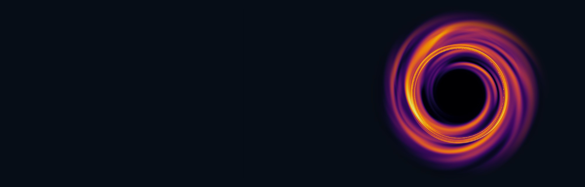
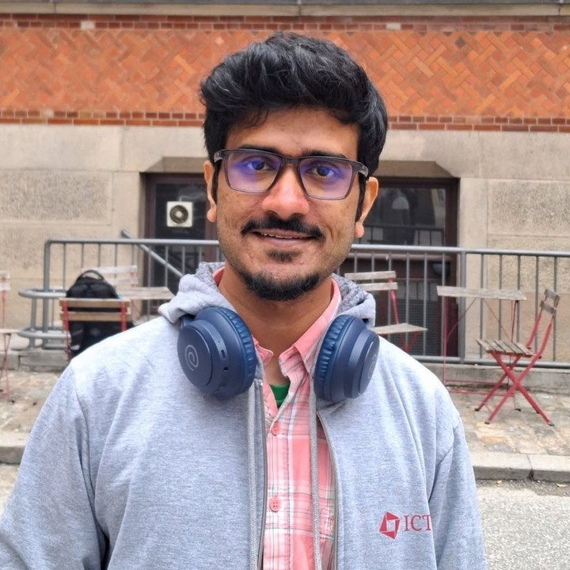

Postdoctoral Fellow — ICTS–TIFR, BengaluruApr 2025 – present
Mentor: Dr. Pallavi Bhat

Postdoctoral Fellow · Relativistic Astrophysics
International Centre for Theoretical Sciences (ICTS–TIFR), Bengaluru, India
I study how matter behaves in the strong gravity of black holes — and what that behaviour leaves behind for us to observe. My work links magnetized accretion flows to the signatures they produce: horizon-scale images, quasi-periodic oscillations, X-ray and radio emission, and gravitational waves.

I am a relativistic astrophysicist working at the interface of theory, numerical simulation and observation. The common thread through my research is the accretion environment of a black hole: a hot, magnetized, turbulent plasma that carries the imprint of strong-field gravity into everything it radiates.
Methodologically I work on both sides of the same problem. On one side, semi-analytical steady-state and post-Newtonian models that make the physics — shocks, transonic structure, angular momentum transport — legible. On the other, global GRMHD simulations and general relativistic ray-tracing that turn that physics into images and light curves we can compare against the Event Horizon Telescope, X-ray timing, and radio data. Increasingly I am extending the same framework outward: to gravitational-wave damping in turbulent disks, and to indirect dark-matter constraints from galaxy-cluster environments.
I completed my Ph.D. at IIT Guwahati in 2025 with Prof. Santabrata Das, supported by the Prime Minister's Research Fellowship, and am currently a postdoctoral fellow at ICTS–TIFR with Dr. Pallavi Bhat. I collaborate widely — recent visits include the Niels Bohr Institute, CAMK Warsaw, the Czech Academy of Sciences, Masaryk University, and Shanghai Astronomical Observatory.
Quasi-normal mode excitation from turbulent GRMHD disks, and the damping of gravitational waves as they propagate through a viscous accreting medium.
How turbulent magnetic fields and trans-magnetosonic, low-angular-momentum flows shape the images and polarization signatures we actually observe.
Building a theoretical model of the X-ray–radio–mass fundamental plane grounded in shocked accretion physics rather than empirical scaling.
Low-angular-momentum accretion shocks as an energy reservoir for the X-ray, NIR and MIR flares seen from the Galactic Centre.
International Centre for Theoretical Sciences (ICTS–TIFR)
Shivakote, Hesaraghatta Hobli, Bengaluru 560089, India